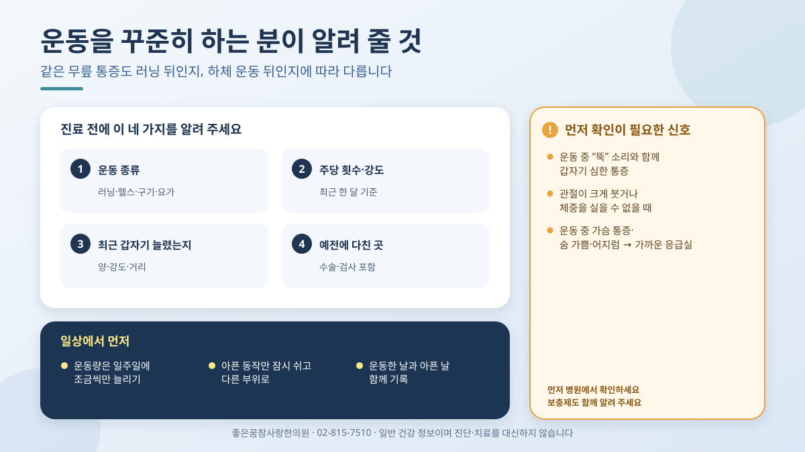

꾸준히 운동하는 분은 운동의 종류와 횟수, 강도, 최근 늘린 운동량, 다친 적이 있는지를 알려 주시면 통증의 원인을 가늠하고 진료 뒤 운동을 이어갈 방법을 정하는 데 도움이 됩니다.
여쭙는 것
- 하는 운동의 종류(러닝, 헬스, 구기, 요가 등)와 주당 횟수는 어떤가요?
- 최근 운동량이나 강도를 갑자기 늘렸나요?
- 불편이 시작된 시점과 어느 동작에서 아픈지 알려 주세요.
생활에서 해 볼 것
- 운동량은 일주일에 조금씩만 늘리기
- 아픈 동작이 있다면 그 동작만 잠시 쉬고 다른 부위 운동으로 바꾸기
- 운동 전후로 가볍게 몸을 풀고 정리 운동하기
한의원에서 함께 살필 것
- 운동 뒤 같은 부위가 반복해서 뻐근하고 아플 때 동작과 자세를 함께 살핍니다.
- 운동은 하는데 피로가 쌓이고 잠이 얕을 때 운동 시간과 휴식 리듬을 함께 여쭙니다.
- 예전 부상 부위가 운동할 때마다 신경 쓰일 때 움직임을 직접 확인합니다.
먼저 확인이 필요한 신호
- 운동 중 "뚝" 하는 소리와 함께 갑자기 심한 통증이 생긴 경우
- 관절이 크게 붓거나 체중을 실을 수 없는 경우
- 운동 중 가슴 통증, 숨 가쁨, 어지럼이 생긴 경우(즉시 119나 응급실)

운동을 꾸준히 하는 분이라면 진료 전에 운동 종류와 주당 횟수, 강도, 최근 운동량을 갑자기 늘렸는지, 예전에 다친 부위를 알려 주세요. 같은 무릎 통증이라도 러닝을 늘린 뒤인지, 헬스 하체 운동 뒤인지에 따라 살펴볼 곳이 달라지기 때문입니다. 한강변 러닝이나 공원 운동을 즐기는 분들이 많이 묻는 내용입니다.
왜 운동 습관을 알아야 할까요
- 운동량이나 강도를 짧은 기간에 크게 늘리면 같은 부위에 부담이 쌓여 불편이 생기기 쉽습니다.
- 반복되는 동작은 특정 힘줄이나 관절에 부담을 몰리게 할 수 있습니다.
- 예전에 다친 부위를 아끼다 보면 다른 부위가 대신 무리하는 경우가 있습니다.
- 운동은 많이 하는데 잠과 휴식이 부족하면 피로가 쌓여 회복이 더딜 수 있습니다.

먼저 이렇게 여쭙니다
- 하는 운동의 종류(러닝, 헬스, 구기, 요가 등)와 주당 횟수는 어떤가요?
- 최근 운동량이나 강도를 갑자기 늘렸나요?
- 불편이 시작된 시점과 어느 동작에서 아픈지 알려 주세요.
- 이전에 다치거나 수술한 부위가 있나요?
- 단백질 보충제나 다른 보충제를 드시나요?
일상에서 먼저 해 볼 수 있는 것
- 운동량은 일주일에 조금씩만 늘리기
- 아픈 동작이 있다면 그 동작만 잠시 쉬고 다른 부위 운동으로 바꾸기
- 운동 전후로 가볍게 몸을 풀고 정리 운동하기
- 운동한 날과 통증이 있었던 날을 함께 기록하기

한의원에서 함께 살필 수 있는 경우
- 운동 뒤 같은 부위가 반복해서 뻐근하고 아플 때 동작과 자세를 함께 살핍니다.
- 운동은 하는데 피로가 쌓이고 잠이 얕을 때 운동 시간과 휴식 리듬을 함께 여쭙니다.
- 예전 부상 부위가 운동할 때마다 신경 쓰일 때 움직임을 직접 확인합니다.
좋은꿈참사랑한의원에서는 아픈 동작을 직접 보여 주시면 주변까지 넓게 살피고, 필요하다고 판단될 때 초음파로 힘줄과 인대를 확인한 뒤 침·약침·추나·체외충격파 등 상태에 맞는 방법을 정합니다. 운동을 쉴지, 강도를 줄일지도 상태에 맞춰 함께 정합니다.
자주 하는 오해
- 아파도 운동으로 풀어야 한다고 여기기 쉽지만, 같은 동작에서 반복되는 통증은 잠시 그 동작을 쉬며 살펴보는 것이 먼저일 수 있습니다.
- 운동을 오래 했으니 내 몸은 내가 잘 안다고 넘기는 분도 있지만, 운동량을 늘린 시기와 통증 시작이 겹치는지는 기록으로 확인해 보세요.
- 진료를 받으면 운동을 완전히 멈춰야 한다고 걱정하는 분도 있는데, 쉴지 줄일지는 상태를 보고 함께 정합니다.

예를 들면 이런 경우입니다
- 예를 들어 주 2회 하던 러닝을 대회를 앞두고 갑자기 주 5회로 늘린 뒤 무릎 바깥쪽이 아픈 경우라면, 늘린 시기와 거리, 운동화를 바꿨는지를 함께 여쭙습니다.
- 예를 들어 헬스장에서 어깨 운동 무게를 올린 뒤 팔을 들 때 어깨 앞쪽이 걸리는 분이라면, 아픈 각도를 직접 보여 주시면 필요할 때 초음파로 힘줄을 확인하고 그 동작을 얼마나 쉴지 함께 정합니다.
- 예를 들어 예전에 발목을 접질린 뒤로 운동할 때마다 반대쪽 무릎이나 허리가 뻐근한 경우라면, 예전 부상 부위의 움직임부터 함께 살핍니다.
스스로 점검해 보세요
- 최근 한 달 사이 운동 횟수나 무게, 거리를 늘렸다
- 운동화나 운동 장소(트랙, 언덕, 실내)를 바꿨다
- 같은 동작에서 같은 부위가 반복해서 아프다
- 예전에 다친 부위가 있다
- 운동 뒤 잠이 얕거나 피로가 다음 날까지 남는다
- 보충제나 진통제를 자주 먹는다
해당하는 항목은 진료 시작 때 운동 이야기와 함께 말씀해 주세요. 특히 첫 두 항목은 통증이 시작된 시기와 겹치는지 살피는 데 도움이 됩니다.

이렇게 기록해 오시면 상담이 쉬워집니다
- 최근 한 달의 운동 종류, 횟수, 강도
- 통증이 시작된 날과 그날 한 운동
- 예전 부상과 받은 검사
- 복용 중인 약과 보충제
이런 증상은 먼저 확인이 필요합니다
- 운동 중 "뚝" 하는 소리와 함께 갑자기 심한 통증이 생긴 경우
- 관절이 크게 붓거나 체중을 실을 수 없는 경우
- 운동 중 가슴 통증, 숨 가쁨, 어지럼이 생긴 경우(즉시 119나 응급실)
이런 경우에는 먼저 병원에서 확인하세요. 복용 중인 약은 처방한 의사와 상의 없이 줄이거나 끊지 않습니다.

얼마나 지켜보고, 언제 확인하면 좋을까요
- 운동 다음 날 뻐근하다가 2~3일 안에 가라앉는 정도라면 운동량을 조금 줄이고 지켜보셔도 됩니다.
- 같은 부위 통증이 1~2주 넘게 이어지거나 운동할 때마다 같은 동작에서 반복된다면 진료를 받아 보세요.
- 운동을 시작할 때 아프다가 몸이 풀리면 덜해지는 통증도 몇 주째 이어진다면 그대로 두지 말고 말씀해 주세요.
- 크게 붓거나 멍이 들고 체중을 싣기 어렵다면, 또는 뚝 하는 소리와 함께 갑자기 아팠다면 기다리지 말고 바로 병원에서 확인하세요.
처음 오시면 이렇게 진행합니다
첫 방문에는 접수 때 기본 정보를 적고, 진료실에서 운동 종류와 횟수, 최근 늘린 운동량, 통증이 시작된 날을 여쭙습니다. 아픈 동작을 직접 보여 주시면 주변 관절까지 움직임을 확인하고, 진맥을 한 뒤 필요하다고 판단될 때 초음파로 힘줄과 인대를 살핍니다. 그 결과를 바탕으로 오늘 받을 치료와 이유를 먼저 설명드리고, 운동을 쉴지 강도를 줄일지, 다음 방문 때 무엇을 확인할지 안내합니다. 동작을 보여 주기 편하도록 움직이기 쉬운 옷을 입고 오시면 좋습니다. 치료받은 날 운동해도 되는지는 받은 치료에 따라 다르므로 그날 직접 물어봐 주세요.

관련 글
- 한강공원에서 달리기를 하고 나면 무릎 바깥쪽이 아플 때는 어떻게 살피나요?
- 헬스장에서 어깨 운동을 한 뒤 어깨 앞쪽이 아플 때는 무엇을 먼저 확인하나요?
- 약침을 맞은 날 운동이나 목욕을 해도 되나요?
한눈에 보는 표
| 구분 | 핵심 |
|---|---|
| 여쭙는 것 | 하는 운동의 종류(러닝, 헬스, 구기, 요가 등)와 주당 횟수는 어떤가요? 최근 운동량이나 강도를 갑자기 늘렸나요? |
| 생활에서 해 볼 것 | 운동량은 일주일에 조금씩만 늘리기 아픈 동작이 있다면 그 동작만 잠시 쉬고 다른 부위 운동으로 바꾸기 |
| 한의원에서 함께 살필 것 | 운동 뒤 같은 부위가 반복해서 뻐근하고 아플 때 동작과 자세를 함께 살핍니다. 운동은 하는데 피로가 쌓이고 잠이 얕을 때 운동 시간과 휴식 리듬을 함께 여쭙니다. |
| 먼저 확인이 필요한 신호 | 운동 중 "뚝" 하는 소리와 함께 갑자기 심한 통증이 생긴 경우 관절이 크게 붓거나 체중을 실을 수 없는 경우 |
자주 묻는 질문
진료 받는 날에도 운동해도 되나요?
받은 치료와 상태에 따라 다르므로 그날 직접 물어보세요.
운동을 쉬어야 하나요?
일률적으로 정해지지 않으며 통증의 위치와 정도를 보고 안내합니다.
보충제를 먹고 있는데 말해야 하나요?
네. 한약을 상담할 때 겹치는 것이 있는지 확인하기 위해 알려 주세요.
이 글은 일반적인 건강 정보이며 개인의 진단이나 치료를 대신하지 않습니다. 증상이 있거나 복용 중인 약이 있다면 진료를 통해 확인하세요. 치료 효과는 개인마다 다를 수 있습니다.
작성 기준: 일반적으로 알려져 있는 건강 정보를 참고해 정리했습니다(대표원장 감수). 증상 기록은 1~2주 동안 하루 1회, 비슷한 시간에 적어 오시면 지난 상태와 비교하기 쉽습니다.
좋은꿈참사랑한의원은 재진 때 지난번 이야기부터 이어서 여쭙니다. 진료시간과 예약은 오시는 길에서 확인하세요.